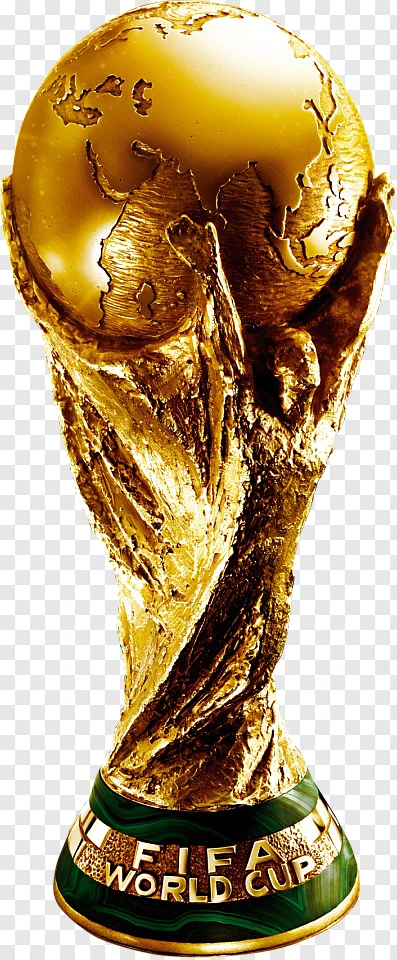

Designed for quick scanning without breaking the cinematic atmosphere.

Designed for quick scanning without breaking the cinematic atmosphere.
The ticker and nation panel share one data model, ready for a live API feed.
Capacity, city, altitude, and atmosphere can attach to every fixture.
Titles, iconic runs, and edition timelines can be explored from each country.
Kept clearly separated from live facts so the product stays trustworthy.
The expanded tournament in Canada, Mexico, and the United States, framed as a live-ready premium data layer.
The largest World Cup field, built for country-by-country live data.
Group stage, knockout paths, and final routes across North America.
Venue intelligence across Canada, Mexico, and the United States.
One tournament atmosphere spread across three football cultures.